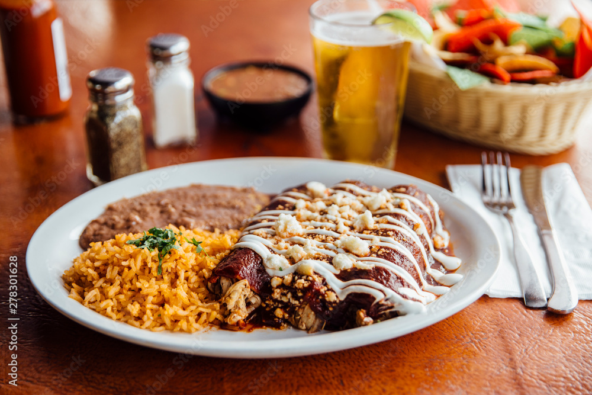

Inicio
Enchiladas suizas

Por Ricardo Manzanares - Aranza Gavia
Cocina para tu familia unas clásicas ENCHILADAS SUIZAS hechas con queso tipo manchego, Media Crema NESTLÉ® y CARNATION® CLAVEL®. ¡Te encantarán!.
Ingredientes
- 500 Gramos de Tomates verdes cocidos
- 1 Chile serrano cocido
- 2 Dientes de Ajo
- 1/4 Pieza de Cebolla
- 1 Cucharada de Consomé de pollo en polvo
- 1 Lata de Leche Evaporada CARNATION® CLAVEL® (1 1/2 tazas)
- 1/2 Taza de Queso parmesano en polvo
- 6 Ramitas de Cilantro fresco desinfectadas
- 1 Cucharada de Fécula de maíz
- 1/4 Taza de Agua
- 1 Pechuga de pollo cocida y deshebrada
- 12 Tortillas de maíz
- 1/4 Taza de Aceite de maíz
- 200 Gramos de Queso tipo manchego rallado
- 1/2 Cebolla morada picada finamente
- 1 Envase de Media Crema NESTLÉ® refrigerada (190 g)
Pasos
- Licúa los tomates verdes con el chile serrano, 2 dientes de ajo, ¼ pieza de cebolla, el consomé de pollo, la Leche Evaporada CARNATION® CLAVEL®, el queso parmesano y 6 ramas de cilantro; calienta a fuego medio durante 5 minutos. Disuelve la fécula de maíz en el agua, agrega a la salsa y calienta por 5 minutos más o hasta que espese ligeramente, moviendo constantemente para evitar que se pegue.
- Calienta un poco de aceite en una sartén y fríe ligeramente las tortillas sin que endurezcan, retira y coloca sobre papel absorbente. Rellena las tortillas con pollo, sirve 3 piezas en un plato y baña con la salsa.
- Coloca un poco de queso sobre las enchiladas, cubre con plástico adherente y calienta en el microondas por 30 segundos o hasta que el queso esté fundido. Decora con un poco de cebolla morada y Media Crema NESTLÉ®.